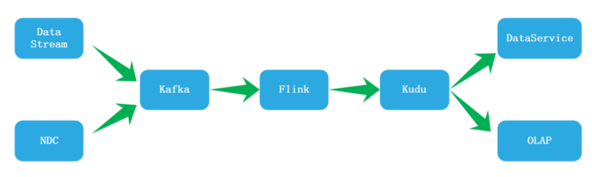
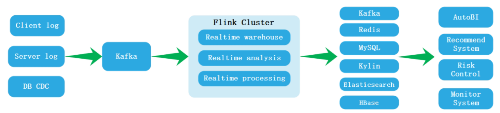
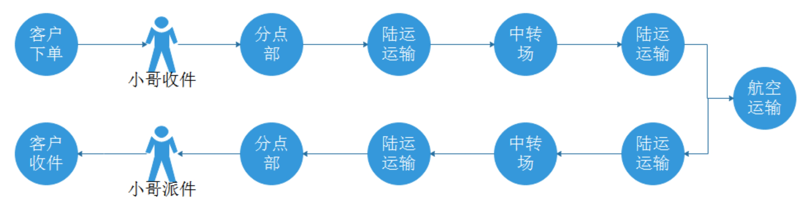
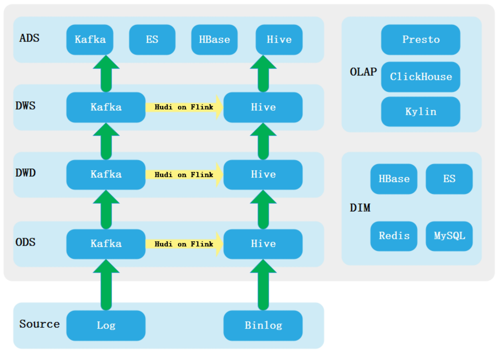
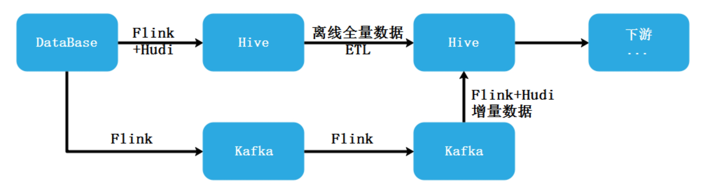
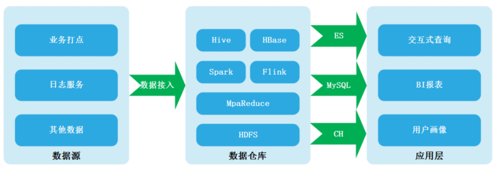
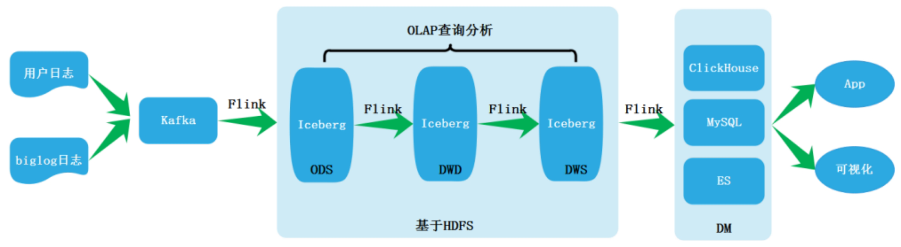
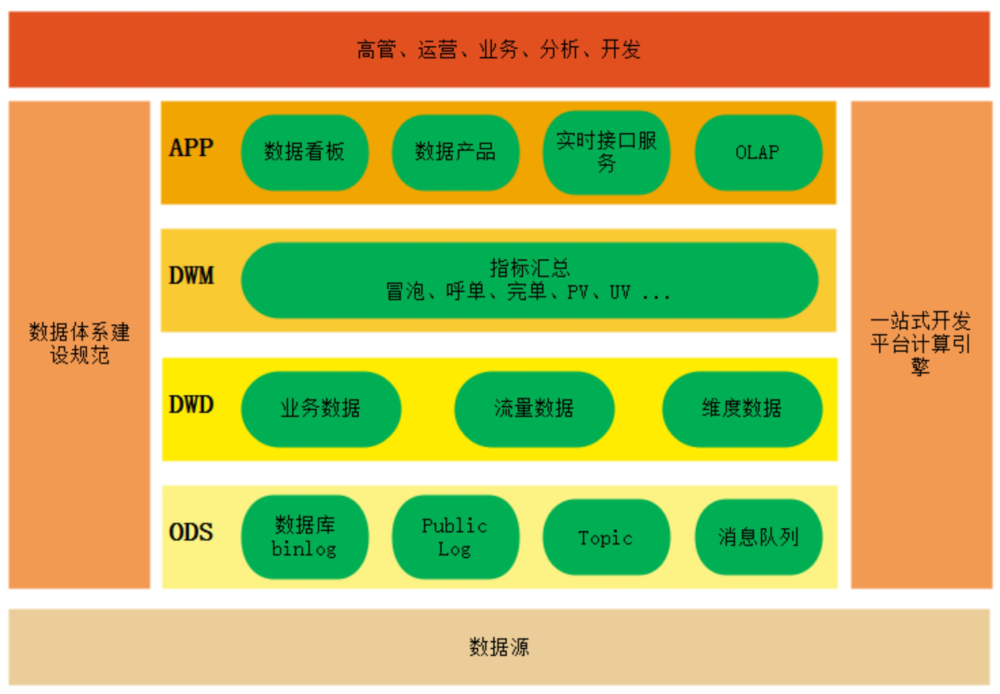
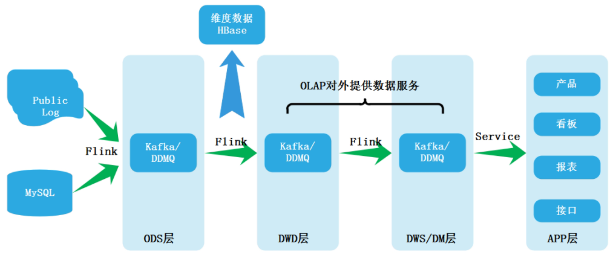

网易实时数仓实践

此架构是基于Kudu的实时数据数仓，通过Data Stream自己写的数据采集工具来采集日志数据写入Kafka，使用NDC(类似CDC)服务可以将binlog数据推送到Kafka，通过Flink读取Kafka数据结果写入Kudu,基于Kudu构建实时数仓好处就是延迟低（毫秒/秒级）；支持upsert；支持水平扩展。但是也存在一些问题，例如：
- 突然数据量增多，基于内存会有很大的Compaction操作，会造成数据服务不可用;
- 数据孤岛问题，Kudu很难与HDFS中的数据做贯通，形成数据孤岛；
- 不支持更新主键。
汽车之家实时数仓实践

在2016年汽车之家使用Storm构建实时平台，存在很多痛点，例如：纯编码方式开发，开发成本高；Storm不支持状态，当有状态业务是借助Redis实现，计算效率低，假设数据扩增多，Redis集群扩容不及时容易产生问题；Storm不支持SQL开发，对数仓不友好等。
2019年之后所有实时业务转向Flink处理，使用以上架构，以上架构中数据接入包含三部分：Client log 、Server log 、DB CDC，三部分数据内容如下：
- Client log:在汽车之家大部分数据都是端的数据，例如：用户手机端,PC端，数据包含用户行为数据，例如：浏览数据，播放数据时长日志。
- Server log:包含数据质量监控的日志，服务端的日志，主要用来做一些监控报警，例如：Nginx日志，各种web应用的日志，各种中间件的日志，大数据各种应用的底层日志。
- DB CDC: 各种实时大屏，日志看板，例如：实时订单展示。
在上面架构中数据接收后通过Flink处理写入Kafka主要原因是来自Client log 、Server log 、DB CDC 数据格式是不统一的，通过Flink处理后，将格式统一成规范的json数据再写入Kafka。数据写入Redis和ES的主要作用是做实时数据缓存。最终这些Flink处理后的数据用来BI展示、推荐、风险控制、实时监控。
顺丰实时数仓实践
顺丰是国内领先的快递物流综合服务商， 顺丰使用大数据服务支撑了高质量的物流服务，其快递流转过程如下：
正是由于复杂的业务所以构建数仓。早期采用了Lambda架构构建数仓，随着实时业务增多，Lambda架构的弊端也慢慢凸显，后期改为实时数仓。
实时数仓和离线数仓实际上解决的都是相同的业务问题，最大的区别在于时效性，离线数仓有小时级和天级的延迟，而实时数仓则是秒级和分钟级的延迟，其他部分都相似，例如：数据源、数据存储、数据开发都是比较相近。为了解决开发者的割裂感，将离线和实时业务进行统一，并且可以通过实时的引擎来加速离线报表产出。 顺丰实时数仓架构如下：

以上架构中 使用Hudi来加速宽表数据，这个是如何实现的？
Hudi的关键特性如下：
- 可回溯历史数据
- 在大规模数据集中更新删除
- 根据主键更新删除
- 在数据写入时支持复制
- 在数据读取时支持聚合
- 支持视图，增量视图和实时视图
- Hudi可以作为数据源发出增量数据
- 异步压缩小文件，合并小文件
以ODS层为例，在ODS层引入Hudi可以使原来ODS层T+1抽取数据变为实时抽取数据，同时使用Flink消费Kafka中的数据，获取增量数据，通过Hudi将数据增量更新到Hive DWD等宽表中，将离线增量转变为实时增量。

注意：Hudi写入的过程是批处理的过程，且Hudi强依赖于Spark，顺丰对Hudi进行了修改完善。
腾讯实时数仓实践
腾讯内部有QQ音乐、腾讯广告、腾讯看点、小程序、视频号等业务线每天数据量在万亿级别，这些服务线在构建各自的数据分析平台时采用的数据平台架构如下： 
以上数据平台架构中，常常会使用一些离线调度系统定期调度Spark任务进行数据接入、ELT、展示过程，例如针对腾讯看点业务线，数据前方会有埋单，通过数据服务将数据接入到数据仓库，再通过ES/MySQL/ClickHouse对外提供数据展示。整个过程中,对于离线平台，数据接入、处理数据延迟一般是小时级别或者T+1级别，为了一些实时性需求，最初采用的是Lambda架构，分为批流两条线路，在实时链路中采用Flink处理，离线中使用Spakr进行处理，Lambda架构有一些痛点，例如：大大增加数据仓库阶段中组件复杂度、运维成本增加、数据不一致等，所以后期转换到基于Flink+Kafka的Kappa架构，在Kappa架构中也有痛点，例如：
- 对消息队列存储要求高，消息队列的回溯能力不及离线存储
- 消息队列本身对数据存储有时效性，且当前无法使用OLAP引擎直接分析消息队列中的数据
- 全链路依赖消息队列的实时计算可能因为数据的时序性导致结果不正确
最后决定升级改造Kappa架构，基于Flink+Iceberg来针对实时数据流构建实时数仓，架构如下：

腾讯采用的是Flink+Iceberg方式构建实时数仓，其架构图如上，即将原有Kappa架构中的Kafka替换成了Iceberg,有如下好处：
- 实现了存储层的流批统一，存储成本降低
- 中间层支持OLAP分析，可以基于Iceberg针对实时数仓中的某些层做一些OLAP分析，将结果输出到下游。
- Iceberg底层存储依赖于HDFS并且支持列式存储，可以基于中间某些层使用Flink做一些计算，那么可以将原来Kappa架构中离线链路中天级别延时降低到小时级别或者分钟级别。
将Kappa架构改造之后实际上也带来了一些缺点，例如：向Kafka中写数据与向HDFS中写数据相对比，肯定是向Kafka中写数据更快，所以将Kafka替换成Iceberg之后，数据延迟从实时变成近实时；Iceberg对接其他数据系统需要额外的开发工作，不如Kafka完善。这些缺点可以认为是Iceberg目前发展不完善导致，随着Iceberg的发展，这些问题也会一一得到解决。
滴滴实时数仓实践
在2019年之前，滴滴内部都是自建的实时服务，没有统一规定实时引擎，这些自建服务中包含Spark和Flink任务，开发成本比较高，使用低级api的方式进行业务开发。这个阶段更多的是业务驱动，没有专门的实时数仓概念,大家都是分散建设。
在2019年之后，公司内部统一了实时计算的引擎为Flink,并且对Flink引擎内部做了一些增强，实时数仓正式在某些业务上进行实践。在2020年下半年，公司内部对实时开发平台进行升级，实时数仓建设主要集中在任务统一规划和数仓规范性建设方面。目前，在滴滴中每日运行核心作业150+，覆盖的核心指标有200+(包括了公司各个业务线的产品)，资源总量10000+（core），各个业务线产品包含：滴滴出行（网约车，拼车各个业务线）、滴滴顺风车独立业务线、DIDI广告业务独立业务线、橙心优选独立业务线，体系架构如下：

以上体系架构图就是滴滴整体业务架构图，底层是数据源，中间也做了数据仓库分层，包括ODS层，DWD明细层是将ODS层数据库binlog、Public Log、Topic、消息队列同步过来，DWD包含三类数据：业务数据（订单交易），流量数据（主要是埋点获取用户行为数据，用作用户分析），维度数据（用户数据、司机数据、车辆行驶数据、拍照数据等维度数据），DWM层就是指标汇总层，对一些核心的指标做一些汇总，包括：冒泡、呼单、完单、PV、UV、财务、安全等。APP层更多是关于数据展现，包括数据看板，数据产品，还包含实时接口服务（主要提供给数据使用方，例如数据监管，保证数据一致性等），OLAP分析（数据检验，临时性业务分析）等。最上面是面向某些特定用户提供平台使用，如：高管、运营、业务、分析、开发。左侧数据体系建设规范包括表命名规范，字段命名规范，任务调度规范，数据规范、运维规范等。右侧是内部开发计算引擎平台。
滴滴整体数据链路架构图如下：

数据链路最左侧是数据源，通过平台任务汇集到ODS层Kafka、DDMQ(滴滴内部自研消息队列) ，后经Flink进行数据清洗和维度建设，维度存入HBase，数据经过清洗落入DWD层，再经过一些核心Flink任务，数据落入DWS层，在这两层有一些OLAP任务（部分核心任务基于DWD、DWS层进行OLAP查询分析），针对DWS层再经过一些Flink任务数据还会做一些指标汇总形成DM汇聚层，这一层对外提供数据服务形成APP层，APP层主要是一些产品、看板、报表、接口调度服务，主要是数据应用，包括构建指标体系，帮助业务同学看清业务发展情况、针对营销活动（补贴，营销活动），看到活动效果，快速进行策略调整、针对反作弊场景，构建算法策略，快速识别风险。目前消息队列使用的是Kafka和DDMQ,维度数据存入HBase, OLAP引擎正在由Druid向ClickHouse迁移。

...
...
This is copyright.